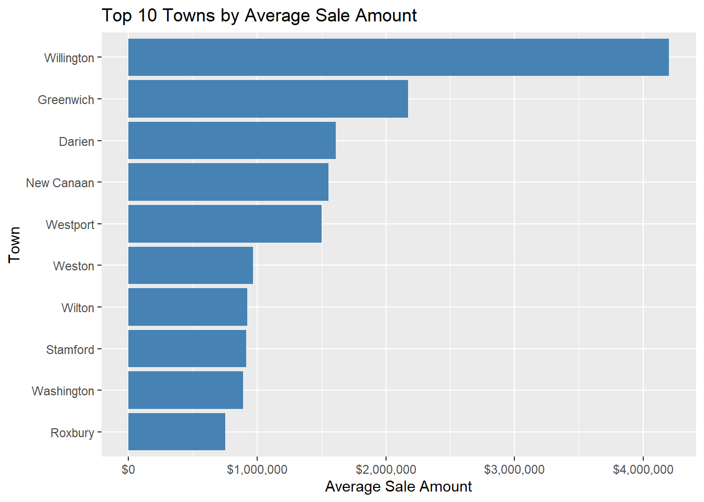

This report analyzes property sales data from 2001 to 2022 using R. It covers data loading, cleaning, basic statistics, visualizations, and insights extracted from the dataset. The goal is to identify patterns and trends that can support real estate decision-making.
Serial.Number List.Year Date.Recorded Town
Min. :0.000e+00 Min. :2001 Length:1097629 Length:1097629
1st Qu.:3.071e+04 1st Qu.:2005 Class :character Class :character
Median :8.071e+04 Median :2011 Mode :character Mode :character
Mean :5.370e+05 Mean :2011
3rd Qu.:1.703e+05 3rd Qu.:2018
Max. :2.001e+09 Max. :2022
Address Assessed.Value Sale.Amount Sales.Ratio
Length:1097629 Min. : 0 Min. :0.000e+00 Min. :0.000e+00
Class :character 1st Qu.: 89090 1st Qu.:1.450e+05 1st Qu.:4.800e-01
Mode :character Median : 140580 Median :2.330e+05 Median :6.100e-01
Mean : 281802 Mean :4.053e+05 Mean :9.600e+00
3rd Qu.: 228270 3rd Qu.:3.750e+05 3rd Qu.:7.700e-01
Max. :881510000 Max. :5.000e+09 Max. :1.226e+06
Property.Type Residential.Type Non.Use.Code Assessor.Remarks
Length:1097629 Length:1097629 Length:1097629 Length:1097629
Class :character Class :character Class :character Class :character
Mode :character Mode :character Mode :character Mode :character
OPM.remarks Location
Length:1097629 Length:1097629
Class :character Class :character
Mode :character Mode :character
Data Cleaning
Code
# Convert 'Date.Recorded' column to Date formatreal_estate$Date.Recorded <-as.Date(real_estate$Date.Recorded, format ="%m/%d/%Y")# Extract year from 'Date.Recorded'real_estate$Year <-as.numeric(format(real_estate$Date.Recorded, "%Y"))# Check for missing values in all columnscolSums(is.na(real_estate))
# Remove rows with zero or missing Sale.Amount or Assessed.Valuereal_estate_clean <- real_estate %>%filter(Sale.Amount >0, Assessed.Value >0, !is.na(Sale.Amount), !is.na(Assessed.Value))# Extract Latitude and Longitude from 'Location' columnreal_estate_clean <- real_estate_clean %>%mutate(Location =str_replace_all(Location, "POINT \\(|\\)", ""),Longitude =as.numeric(str_extract(Location, "[-]?\\d+\\.\\d+")),Latitude =as.numeric(str_extract(Location, "(?<= )[-]?\\d+\\.\\d+")) )
Final Cleaning and Row Count Comparison
Code
# Further clean the dataset: remove NA dates, invalid years, and extreme sales ratiosreal_estate_clean2 <- real_estate_clean %>%filter(!is.na(Date.Recorded),!is.na(Year), Sales.Ratio >0, Sales.Ratio <10 )# Compare number of rows before and after cleaningcat("Original rows:", nrow(real_estate), "\n")
Original rows: 1097629
Code
cat("After filtering and cleaning:", nrow(real_estate_clean2), "\n")
After filtering and cleaning: 1079247
Exploratory Data Analysis: Sale Amount Distribution
Code
# Histogram of Sale Amount (log scale)ggplot(real_estate_clean2, aes(x = Sale.Amount)) +geom_histogram(bins =50, fill ="blue", alpha =0.7) +scale_x_log10() +labs(title ="Distribution of Sale Amount (log scale)",x ="Sale Amount (log scale)",y ="Count" )
Exploratory Data Analysis: Assessed Value Distribution
Code
# Histogram of Assessed Value (log scale)ggplot(real_estate_clean2, aes(x = Assessed.Value)) +geom_histogram(bins =50, fill ="green", alpha =0.7) +scale_x_log10() +labs(title ="Distribution of Assessed Value (log scale)",x ="Assessed Value (log scale)",y ="Count" )
Scatter Plot: Assessed Value vs Sale Amount
Code
# Take a 10,000-row sample for visualizationsample_data <- real_estate_clean2 %>%sample_n(10000)# Scatter plot (log-log scale)ggplot(sample_data, aes(x = Assessed.Value, y = Sale.Amount)) +geom_point(alpha =0.3, color ="purple") +scale_x_log10() +scale_y_log10() +labs(title ="Assessed Value vs Sale Amount (log-log scale)",x ="Assessed Value",y ="Sale Amount" )
Sales Trend Over Time
Code
# Count number of sales per yearsales_per_year <- real_estate_clean2 %>%group_by(Year) %>%summarise(Total_Sales =n())# Line plot of total sales per yearggplot(sales_per_year, aes(x = Year, y = Total_Sales)) +geom_line(color ="red") +labs(title ="Number of Sales per Year",x ="Year",y ="Total Sales" )
Sales by Property Type
Code
# Count number of sales by property typesales_by_type <- real_estate_clean2 %>%group_by(Property.Type) %>%summarise(Count =n()) %>%arrange(desc(Count))# Bar chart of sales count by property typeggplot(sales_by_type, aes(x = Property.Type, y = Count)) +geom_bar(stat ="identity", fill ="orange") +scale_y_continuous(labels = scales::comma) +labs(title ="Number of Sales by Property Type",x ="Property Type",y ="Count" ) +theme(axis.text.x =element_text(angle =45, hjust =1))
Average Sale & Assessed Value Over Time by Property Type
Code
# Group and summarize sale amount and assessed valueavg_prices_year_type <- real_estate_clean2 %>%group_by(Year, Property.Type) %>%summarise(Avg_Sale_Amount =mean(Sale.Amount, na.rm =TRUE),Avg_Assessed_Value =mean(Assessed.Value, na.rm =TRUE),Count =n(),.groups ="drop" ) %>%filter(!is.na(Property.Type))# Plot average sale amount over timeggplot(avg_prices_year_type, aes(x = Year, y = Avg_Sale_Amount, color = Property.Type)) +geom_line(linewidth =1) +scale_y_log10(labels = scales::dollar_format(prefix ="$")) +labs(title ="Average Sale Amount Over Time by Property Type",x ="Year", y ="Average Sale Amount (log scale)", color ="Property Type" ) +theme_minimal()
Average Assessed Value Over Time by Property Type
Code
# Plot average assessed value over timeggplot(avg_prices_year_type, aes(x = Year, y = Avg_Assessed_Value, color = Property.Type)) +geom_line(linewidth =1) +scale_y_log10(labels = scales::dollar_format(prefix ="$")) +labs(title ="Average Assessed Value Over Time by Property Type",x ="Year", y ="Average Assessed Value (log scale)", color ="Property Type" ) +theme_minimal()
Average Sale Amount Over Time by Residential Type
Code
# Filter and summarize by Residential Typetype_trend_res <- real_estate_clean2 %>%filter(Residential.Type !="") %>%group_by(Year, Residential.Type) %>%summarise(Avg_Sale_Amount =mean(Sale.Amount, na.rm =TRUE),Count =n(),.groups ="drop" )# Plot average sale amount by residential typeggplot(type_trend_res, aes(x = Year, y = Avg_Sale_Amount, color = Residential.Type)) +geom_line(linewidth =1) +scale_y_log10(labels = scales::dollar_format(prefix ="$")) +labs(title ="Average Sale Amount Over Time by Residential Type",x ="Year", y ="Average Sale Amount (log scale)", color ="Residential Type" ) +theme_minimal()
Number of Sales Over Time by Residential Type
Code
# Count sales by residential typetype_count_res <- real_estate_clean2 %>%group_by(Year, Residential.Type) %>%summarise(Count =n(), .groups ="drop") %>%filter(!is.na(Residential.Type))# Plot number of sales over timeggplot(type_count_res, aes(x = Year, y = Count, color = Residential.Type)) +geom_line(linewidth =1) +scale_y_continuous(labels = scales::comma) +labs(title ="Number of Sales Over Time by Residential Type",x ="Year", y ="Count of Sales", color ="Residential Type" ) +theme_minimal()
Top 10 Towns by Average Sale Amount
Code
# Compute average sale amount and total sales per townavg_sales_by_town <- real_estate_clean2 %>%group_by(Town) %>%summarise(Avg_Sale_Amount =mean(Sale.Amount, na.rm =TRUE),Total_Sales =n(),.groups ="drop" ) %>%filter(Total_Sales >100) %>%# only include towns with significant dataarrange(desc(Avg_Sale_Amount))# Select top 10 townstop_towns <-head(avg_sales_by_town, 10)# Plot the resultggplot(top_towns, aes(x =reorder(Town, Avg_Sale_Amount), y = Avg_Sale_Amount)) +geom_bar(stat ="identity", fill ="steelblue") +coord_flip() +scale_y_continuous(labels = scales::dollar_format(prefix ="$")) +labs(title ="Top 10 Towns by Average Sale Amount",x ="Town", y ="Average Sale Amount" )

Average Sale Amount Over Time in Ansonia
Code
# Focus on a single town (e.g., Ansonia)town_name <-"Ansonia"# Compute yearly average sale amount for that townavg_sales_town <- real_estate_clean2 %>%filter(Town == town_name) %>%group_by(Year) %>%summarise(Avg_Sale_Amount =mean(Sale.Amount, na.rm =TRUE),.groups ="drop" )# Plot the trendggplot(avg_sales_town, aes(x = Year, y = Avg_Sale_Amount)) +geom_line(color ="darkgreen") +geom_point() +scale_y_continuous(labels = scales::dollar_format(prefix ="$")) +labs(title =paste("Average Sale Amount Over Time in", town_name),x ="Year", y ="Average Sale Amount" ) +theme_minimal()
Conclusion
This real estate project took a deep dive into property sales data from 2001 to 2022 across Connecticut. After cleaning and preparing the dataset, I explored trends, patterns, and differences in property types, towns, and price behaviors.
Some of the biggest takeaways include:
Residential properties (especially single and two-family homes) make up most of the market.
Theres a clear skew in sale amounts and assessed values which is why I used log scales in the plots.
Sales volumes changed year to year, and some towns consistently had higher average sale prices.
A closer look at Ansonia helped show how a specific towns market evolved over time.
Overall, this project helped me strengthen my skills in R from data wrangling and visualization to telling a clear story with data. If I continue building on this, Id love to turn it into an interactive dashboard using Shiny, or compare trends between multiple towns.
Source Code
---title: "Real Estate Data Analysis"author: "Awuonda Rubby"date: todayformat: html: toc: true toc-depth: 3 toc-location: left theme: cosmo code-fold: true code-tools: true df-print: paged page-layout: fulleditor: visual---## IntroductionThis report analyzes property sales data from 2001 to 2022 using R. It covers data loading, cleaning, basic statistics, visualizations, and insights extracted from the dataset. The goal is to identify patterns and trends that can support real estate decision-making.## Load Packages```{r}pacman::p_load( dplyr, stringr, tidyr, lubridate, data.table, rio, readr, readxl, haven, ggplot2, ggvis, plotly, corrplot, httr, jsonlite, rvest, rmarkdown, knitr, shiny, flexdashboard, caret, randomForest, xgboost, e1071, forecast, zoo, tsibble, car, psych, stats, pacman, GGally, ggthemes)```## Load Dataset```{r}# Load the datasetreal_estate <-read.csv("Real_Estate_Sales_2001-2022_GL.csv", stringsAsFactors =FALSE)# Preview structure and summarystr(real_estate)summary(real_estate)```## Data Cleaning```{r}# Convert 'Date.Recorded' column to Date formatreal_estate$Date.Recorded <-as.Date(real_estate$Date.Recorded, format ="%m/%d/%Y")# Extract year from 'Date.Recorded'real_estate$Year <-as.numeric(format(real_estate$Date.Recorded, "%Y"))# Check for missing values in all columnscolSums(is.na(real_estate))```## Filter and Extract Coordinates```{r}# Remove rows with zero or missing Sale.Amount or Assessed.Valuereal_estate_clean <- real_estate %>%filter(Sale.Amount >0, Assessed.Value >0, !is.na(Sale.Amount), !is.na(Assessed.Value))# Extract Latitude and Longitude from 'Location' columnreal_estate_clean <- real_estate_clean %>%mutate(Location =str_replace_all(Location, "POINT \\(|\\)", ""),Longitude =as.numeric(str_extract(Location, "[-]?\\d+\\.\\d+")),Latitude =as.numeric(str_extract(Location, "(?<= )[-]?\\d+\\.\\d+")) )```## Final Cleaning and Row Count Comparison```{r}# Further clean the dataset: remove NA dates, invalid years, and extreme sales ratiosreal_estate_clean2 <- real_estate_clean %>%filter(!is.na(Date.Recorded),!is.na(Year), Sales.Ratio >0, Sales.Ratio <10 )# Compare number of rows before and after cleaningcat("Original rows:", nrow(real_estate), "\n")cat("After filtering and cleaning:", nrow(real_estate_clean2), "\n")```## Exploratory Data Analysis: Sale Amount Distribution```{r}# Histogram of Sale Amount (log scale)ggplot(real_estate_clean2, aes(x = Sale.Amount)) +geom_histogram(bins =50, fill ="blue", alpha =0.7) +scale_x_log10() +labs(title ="Distribution of Sale Amount (log scale)",x ="Sale Amount (log scale)",y ="Count" )```## Exploratory Data Analysis: Assessed Value Distribution```{r}# Histogram of Assessed Value (log scale)ggplot(real_estate_clean2, aes(x = Assessed.Value)) +geom_histogram(bins =50, fill ="green", alpha =0.7) +scale_x_log10() +labs(title ="Distribution of Assessed Value (log scale)",x ="Assessed Value (log scale)",y ="Count" )```## Scatter Plot: Assessed Value vs Sale Amount```{r}# Take a 10,000-row sample for visualizationsample_data <- real_estate_clean2 %>%sample_n(10000)# Scatter plot (log-log scale)ggplot(sample_data, aes(x = Assessed.Value, y = Sale.Amount)) +geom_point(alpha =0.3, color ="purple") +scale_x_log10() +scale_y_log10() +labs(title ="Assessed Value vs Sale Amount (log-log scale)",x ="Assessed Value",y ="Sale Amount" )```## Sales Trend Over Time```{r}# Count number of sales per yearsales_per_year <- real_estate_clean2 %>%group_by(Year) %>%summarise(Total_Sales =n())# Line plot of total sales per yearggplot(sales_per_year, aes(x = Year, y = Total_Sales)) +geom_line(color ="red") +labs(title ="Number of Sales per Year",x ="Year",y ="Total Sales" )```## Sales by Property Type```{r}# Count number of sales by property typesales_by_type <- real_estate_clean2 %>%group_by(Property.Type) %>%summarise(Count =n()) %>%arrange(desc(Count))# Bar chart of sales count by property typeggplot(sales_by_type, aes(x = Property.Type, y = Count)) +geom_bar(stat ="identity", fill ="orange") +scale_y_continuous(labels = scales::comma) +labs(title ="Number of Sales by Property Type",x ="Property Type",y ="Count" ) +theme(axis.text.x =element_text(angle =45, hjust =1))```## Average Sale & Assessed Value Over Time by Property Type```{r}# Group and summarize sale amount and assessed valueavg_prices_year_type <- real_estate_clean2 %>%group_by(Year, Property.Type) %>%summarise(Avg_Sale_Amount =mean(Sale.Amount, na.rm =TRUE),Avg_Assessed_Value =mean(Assessed.Value, na.rm =TRUE),Count =n(),.groups ="drop" ) %>%filter(!is.na(Property.Type))# Plot average sale amount over timeggplot(avg_prices_year_type, aes(x = Year, y = Avg_Sale_Amount, color = Property.Type)) +geom_line(linewidth =1) +scale_y_log10(labels = scales::dollar_format(prefix ="$")) +labs(title ="Average Sale Amount Over Time by Property Type",x ="Year", y ="Average Sale Amount (log scale)", color ="Property Type" ) +theme_minimal()```## Average Assessed Value Over Time by Property Type```{r}# Plot average assessed value over timeggplot(avg_prices_year_type, aes(x = Year, y = Avg_Assessed_Value, color = Property.Type)) +geom_line(linewidth =1) +scale_y_log10(labels = scales::dollar_format(prefix ="$")) +labs(title ="Average Assessed Value Over Time by Property Type",x ="Year", y ="Average Assessed Value (log scale)", color ="Property Type" ) +theme_minimal()```## Average Sale Amount Over Time by Residential Type```{r}# Filter and summarize by Residential Typetype_trend_res <- real_estate_clean2 %>%filter(Residential.Type !="") %>%group_by(Year, Residential.Type) %>%summarise(Avg_Sale_Amount =mean(Sale.Amount, na.rm =TRUE),Count =n(),.groups ="drop" )# Plot average sale amount by residential typeggplot(type_trend_res, aes(x = Year, y = Avg_Sale_Amount, color = Residential.Type)) +geom_line(linewidth =1) +scale_y_log10(labels = scales::dollar_format(prefix ="$")) +labs(title ="Average Sale Amount Over Time by Residential Type",x ="Year", y ="Average Sale Amount (log scale)", color ="Residential Type" ) +theme_minimal()```## Number of Sales Over Time by Residential Type```{r}# Count sales by residential typetype_count_res <- real_estate_clean2 %>%group_by(Year, Residential.Type) %>%summarise(Count =n(), .groups ="drop") %>%filter(!is.na(Residential.Type))# Plot number of sales over timeggplot(type_count_res, aes(x = Year, y = Count, color = Residential.Type)) +geom_line(linewidth =1) +scale_y_continuous(labels = scales::comma) +labs(title ="Number of Sales Over Time by Residential Type",x ="Year", y ="Count of Sales", color ="Residential Type" ) +theme_minimal()```## Top 10 Towns by Average Sale Amount```{r}# Compute average sale amount and total sales per townavg_sales_by_town <- real_estate_clean2 %>%group_by(Town) %>%summarise(Avg_Sale_Amount =mean(Sale.Amount, na.rm =TRUE),Total_Sales =n(),.groups ="drop" ) %>%filter(Total_Sales >100) %>%# only include towns with significant dataarrange(desc(Avg_Sale_Amount))# Select top 10 townstop_towns <-head(avg_sales_by_town, 10)# Plot the resultggplot(top_towns, aes(x =reorder(Town, Avg_Sale_Amount), y = Avg_Sale_Amount)) +geom_bar(stat ="identity", fill ="steelblue") +coord_flip() +scale_y_continuous(labels = scales::dollar_format(prefix ="$")) +labs(title ="Top 10 Towns by Average Sale Amount",x ="Town", y ="Average Sale Amount" )```## Average Sale Amount Over Time in Ansonia```{r}# Focus on a single town (e.g., Ansonia)town_name <-"Ansonia"# Compute yearly average sale amount for that townavg_sales_town <- real_estate_clean2 %>%filter(Town == town_name) %>%group_by(Year) %>%summarise(Avg_Sale_Amount =mean(Sale.Amount, na.rm =TRUE),.groups ="drop" )# Plot the trendggplot(avg_sales_town, aes(x = Year, y = Avg_Sale_Amount)) +geom_line(color ="darkgreen") +geom_point() +scale_y_continuous(labels = scales::dollar_format(prefix ="$")) +labs(title =paste("Average Sale Amount Over Time in", town_name),x ="Year", y ="Average Sale Amount" ) +theme_minimal()```## ConclusionThis real estate project took a deep dive into property sales data from 2001 to 2022 across Connecticut. After cleaning and preparing the dataset, I explored trends, patterns, and differences in property types, towns, and price behaviors.Some of the biggest takeaways include:- Residential properties (especially single and two-family homes) make up most of the market.- Theres a clear skew in sale amounts and assessed values which is why I used log scales in the plots.- Sales volumes changed year to year, and some towns consistently had higher average sale prices.- A closer look at Ansonia helped show how a specific towns market evolved over time.Overall, this project helped me strengthen my skills in R from data wrangling and visualization to telling a clear story with data. If I continue building on this, Id love to turn it into an interactive dashboard using Shiny, or compare trends between multiple towns.